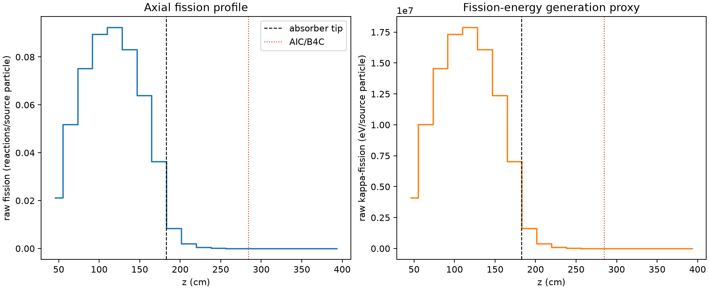
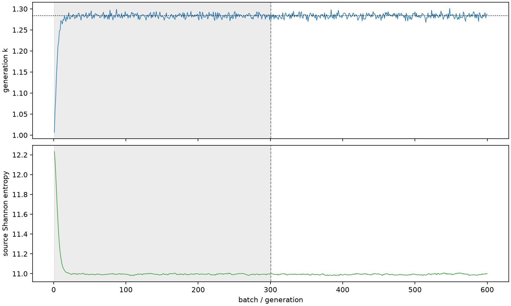

| field | value |
|---|---|
| experiment | V2-STAGE_128_OGRENCI_04-0003 |
| k | 1.2839003477577753 |
| MC standard error | 0.00018422460707058597 |
| seconds | 6023.488126170998 |
| acceptance | not_assessed |
| convergence | review_required |
Completed is output integrity only; physical and statistical review required. Zero tallies do not prove zero production or zero uncertainty.
| diagnostic | value |
|---|---|
| geometric fuel voxels | 5280 |
| zero fission tally voxels | 1237 |
| low signal fuel voxels | 2117 |
| low signal fission share | 6.929108537036301e-05 |
| low signal kappa share | 6.931213530674804e-05 |
| important fission share | 0.9500027674445674 |
| previous filter included | 3163 |
| duration estimate s | 1562.5173488400023 |
| actual minus estimate s | 4460.970777330996 |
| fission relative MC error | statistics |
|---|---|
| all_geometric_fuel | {"voxels": 5280, "positive_mean_voxels": 4043, "zero_mean_voxels": 1237, "undefined_relative_error_voxels": 1237, "median": 0.012050047684766581, "p95": 0.8421513033667549, "maximum": 1.0000000000000002} |
| low_signal | {"voxels": 2117, "positive_mean_voxels": 880, "zero_mean_voxels": 1237, "undefined_relative_error_voxels": 1237, "median": 0.5708128405779163, "p95": 1.0, "maximum": 1.0000000000000002} |
| important_95pct | {"voxels": 1920, "positive_mean_voxels": 1920, "zero_mean_voxels": 0, "undefined_relative_error_voxels": 0, "median": 0.006463290984315669, "p95": 0.0097327323911459, "maximum": 0.012644109628367884} |
| outside_previous_filter | {"voxels": 2117, "positive_mean_voxels": 880, "zero_mean_voxels": 1237, "undefined_relative_error_voxels": 1237, "median": 0.5708128405779163, "p95": 1.0, "maximum": 1.0000000000000002} |
| kappa_fission relative MC error | statistics |
|---|---|
| all_geometric_fuel | {"voxels": 5280, "positive_mean_voxels": 4043, "zero_mean_voxels": 1237, "undefined_relative_error_voxels": 1237, "median": 0.012037955918668035, "p95": 0.8399906755566227, "maximum": 1.0000000000000002} |
| low_signal | {"voxels": 2117, "positive_mean_voxels": 880, "zero_mean_voxels": 1237, "undefined_relative_error_voxels": 1237, "median": 0.570272581212427, "p95": 1.0, "maximum": 1.0000000000000002} |
| important_95pct | {"voxels": 1920, "positive_mean_voxels": 1920, "zero_mean_voxels": 0, "undefined_relative_error_voxels": 0, "median": 0.006456550902931101, "p95": 0.00972296219292318, "maximum": 0.012630399839568648} |
| outside_previous_filter | {"voxels": 2117, "positive_mean_voxels": 880, "zero_mean_voxels": 1237, "undefined_relative_error_voxels": 1237, "median": 0.570272581212427, "p95": 1.0, "maximum": 1.0000000000000002} |
| axial bin | fission share | kappa-fission share |
|---|---|---|
| 1 | 0.040355413696037234 | 0.04035674881172533 |
| 2 | 0.09887307181453271 | 0.09887216731068231 |
| 3 | 0.14339511069681 | 0.14339379208591382 |
| 4 | 0.17051122538254768 | 0.17050975685983444 |
| 5 | 0.17598279422785623 | 0.17598109231425602 |
| 6 | 0.1585919111820131 | 0.15859060280759713 |
| 7 | 0.12177915452807705 | 0.12177812434650805 |
| 8 | 0.06942881834637771 | 0.0694289200792771 |
| 9 | 0.016152775915138563 | 0.01615742461344431 |
| 10 | 0.0037596644127209497 | 0.0037608900285784116 |
| 11 | 0.0008974270287278924 | 0.0008977496452366033 |
| 12 | 0.0002077487104050384 | 0.0002078264892598211 |
| 13 | 5.186742353952881e-05 | 5.188336462768956e-05 |
| 14 | 1.0576215594685896e-05 | 1.0580551600671215e-05 |
| 15 | 2.213553865029044e-06 | 2.2137760804708253e-06 |
| 16 | 2.1710808874813805e-07 | 2.171471483562728e-07 |
| 17 | 9.757667765298649e-09 | 9.768229480046394e-09 |
| 18 | 0.0 | 0.0 |
| 19 | 0.0 | 0.0 |
| 20 | 0.0 | 0.0 |
Histories include the inactive-to-active transition at batch 300. kappa-fission approximates fission energy production, not total heat deposition.

